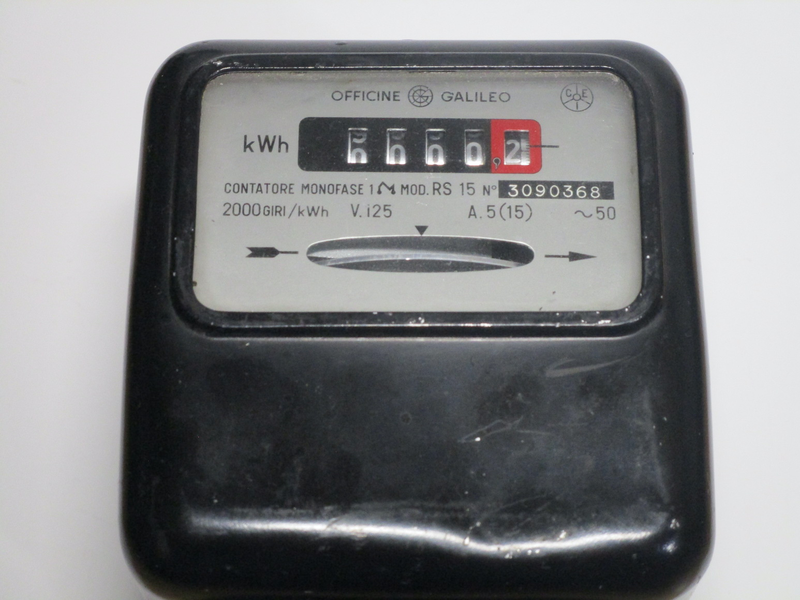
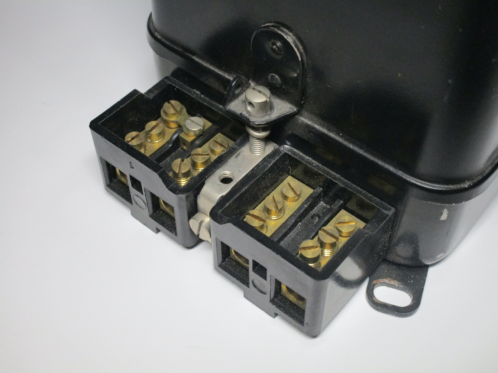
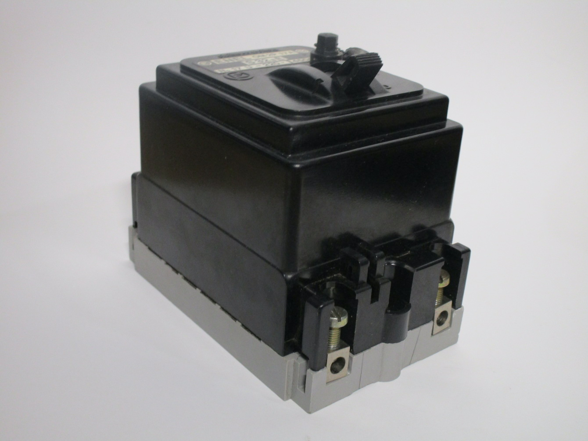

Power meters and cutouts
This page documents a few examples of vintage analogue power meters, as used back in the day, as well as supplier cutouts - that is, fuses or breakers intended to protect the supply wires going into a building.
A note on European power meters: unlike in North America, meters used here generally don't fit into special sockets. Instead, they are mounted directly onto the wall (or, nowadays, on special plastic boxes) using screws, and the line and load wires are then hooked up directly to the meter itself.
125V power meter
This old power meter, built by Officine Galileo in Italy, is quite interesting as it was designed for 125V supplies. As explained previously, these were common back in the day for lighting, as lighting circuits were on a different tariff, and the lower voltage was used to present people from using it for appliances.
This also explains the quite low amp rating of the meter - definitely not enough for an entire house, but more than enough for lighting and small appliances like radios or desk fans. It should be noted that back in the day there were many different voltages in use for lighting supplies, but starting from the 50s-60s these were standardised. 125V was, specifically, one of the "official" voltages permitted for lighting supplies.
 {kind=link}
{kind=link}
{kind=link}
ENEL limiter breaker
This is a power limiter breaker; while it does look similar to other breakers used in Italy back in the day, this one was specifically intended to be used to limit the power in use in an installation. This is because, in Italy, you pay different rates depending on the maximum power specified in your contract - going above the limit for more than a brief period of time will shut off your power.
While nowadays this is all done inside the meter (which, unlike most other countries, has a built-in breaker specifically for that), back in the day this was done using a physically separate breaker.
{kind=link}
{kind=link}